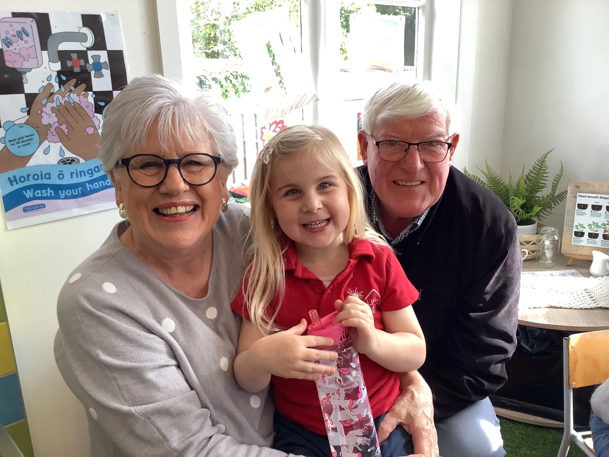

Willa · For Poppa
Willa’s messageThe best Poppa she has ever met
Nice, kind, a little bit cheeky — with the best hugs, the best games and the stories told properly.
The full message
For Poppa, in Willa’s own words
There are lots of ways to describe Colin. Willa gets straight to the important parts.
“The best Poppa I’ve ever met.”
Willa knows exactly what makes her Poppa special: he is nice, kind, a little bit cheeky, gives the best hugs, plays games, shows her photos and tells the stories properly.
Poppa’s job description has grown to include Little School visits, train outings, garden competitions, monkey bars, big bad wolves, the three little pigs — and making sure every adventure comes with a story worth taking home.


Nice. Kind. A little bit cheeky. Exactly right.